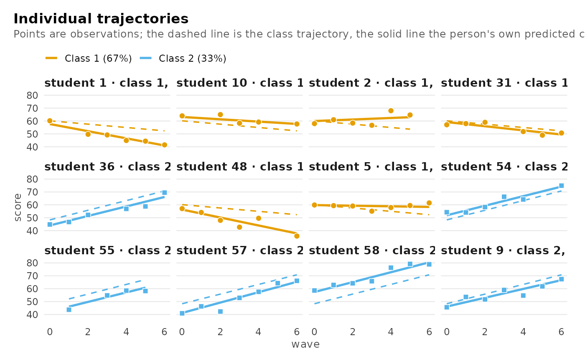
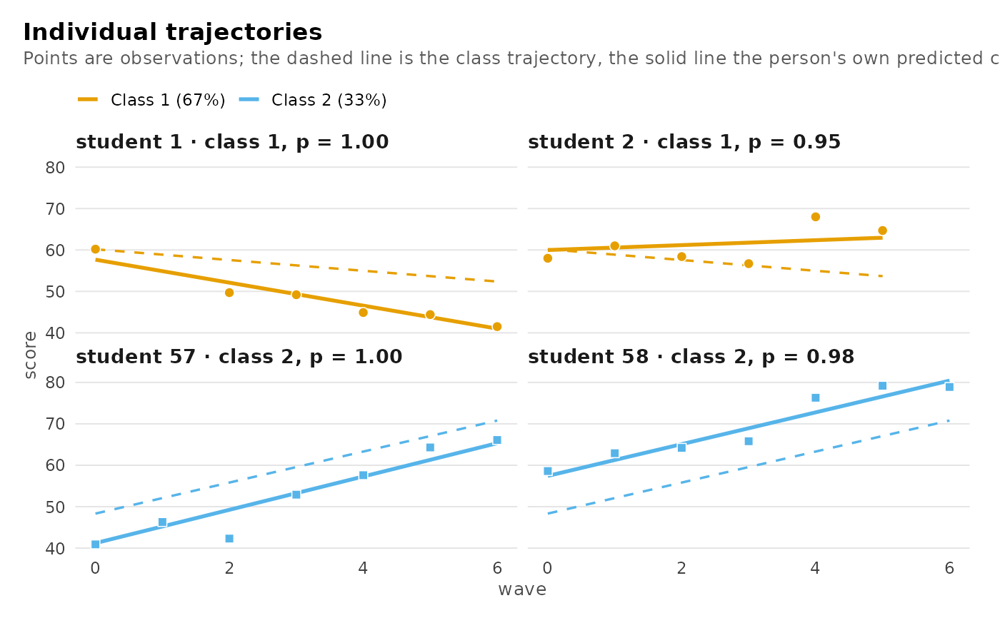
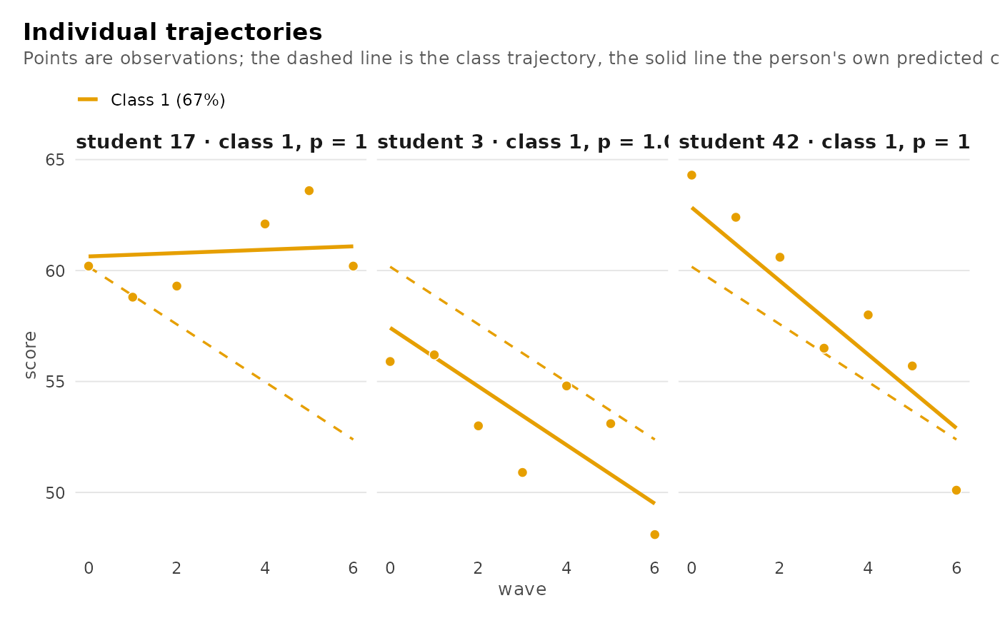

Plot individual persons' observations and predicted curves beside the trajectory of their class
Source:R/wildcards.R
plot_individuals.Rdplot_individuals() plots one panel per person of a growth model, with the
person's observations, the person's own predicted curve and the trajectory of
the person's class.
Arguments
- x
One of:
a growth mixture: a fit from
mixture_regression()withrandom;a fit from
mixture_regression()withclass_level = "group", which classifies persons;a
diagnostics()result, which is drawn from the fit it checked.
- persons
Which persons to draw:
one number (default
12): how many persons. They are taken from the classes in turn, and within a class they are spread from its most certain to its least certain member;two or more values, or text: the identifiers of the persons to draw, as they appear in the data, for example
c(3, 17, 42). A single numeric identifier must be given as text,persons = "1001", because a single number is read as a count.
- main, subtitle
Title and subtitle of the plot.
NULL(default) keeps the view's own text.
Value
A ggplot object with one panel per person.
Errors:
latents_nothing_to_plotwhen the package returnedxbut this function has no plot of it: a mixture regression that classifies observations (including one withn_group_classesof two or more), a fit of any other family or an enumeration grid. For an object of the wrong kind, the message names the plot functions that apply to it;latents_bad_argumentwhenpersonsis a number below 1 or contains a missing value, or when none of the identifiers is in the fitted data;latents_not_a_fitwhenxis not a fit, grid or other result of the package, for example a data frame;latents_missing_packagewhen ggplot2 is not installed.
Details
The x-axis is the time variable and the y-axis the outcome, as in
plot_trajectories(). In each panel the points are the person's
observations, the solid line is the curve predicted for that person and
the dashed line is the mean trajectory of the person's most likely class.
All three are drawn in the colour of that class. The panel title gives
the name of the identifier column with the person's identifier, then the
person's class and the posterior probability of that class.
See also
plot_trajectories() for the classes, plot_classification()
for the class probabilities of every person.
Examples
fit <- mixture_regression(score ~ wave, subset(growth_scores, student <= 60),
n_classes = 2, id = "student", class_level = "group",
random = "wave", n_starts = 2, seed = 1)
plot_individuals(fit)

plot_individuals(fit, persons = 4)

plot_individuals(fit, persons = c(3, 17, 42))
